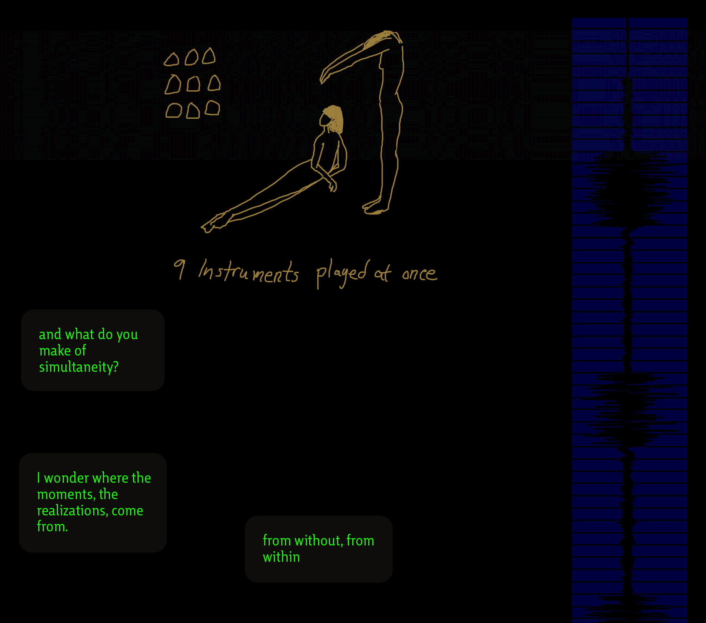
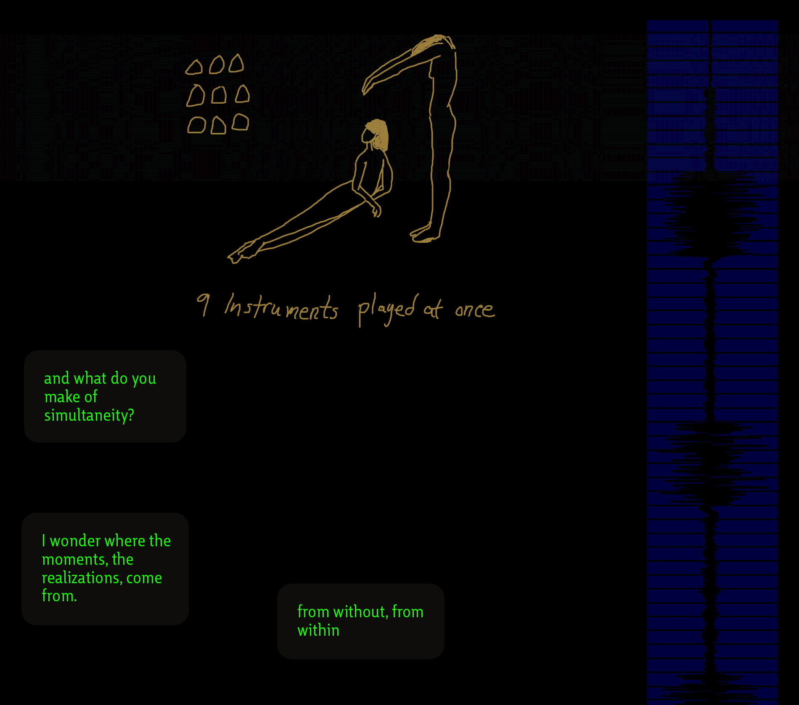

1. Touch Absence
The fragments and building blocks found at the nebulaic center, from which the directions to follow unfold. The absence of certainty leaves room for experimentation. Regardless of how far I travel I make the pilgrimage back to reconfigure the void.
 
